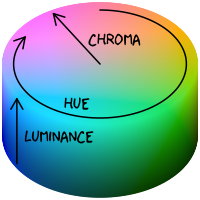

LeftRight
Color blindness simulation
Hue lines
Separability
The percentages are the expected share of people that can tell two lines or points of the chosen size apart,
according to the model of:
Szafir, D.A. (2018). Modeling Color Difference for Visualization Design.
IEEE Transactions on Visualization and Computer Graphics, 24(1), 392-401.
doi:10.1109/TVCG.2017.2744359
Click on a color (row or column) or on a cell to select a pair of colors for the example charts.
Calibration
Measure this line with a ruler (same unit as viewing distance).
HCL space

Hue
Chroma
Luminance
Loading the 3D plot…
Hue necklace
Chroma-Luminance
Fairness
Naming table (in development)
Chromostereopsis
Contrast ratios with white (background)
Options
Contrast ratios between colors
Click on a color (row or column) or on a cell to select a pair of colors.
Text readability
Border lines needed?
Optical Illusion Art
Plus Reversed by Richard Anuszkiewicz (1960)
Points
Lines
Polygons
Text
This tab is not available yet in the web version.